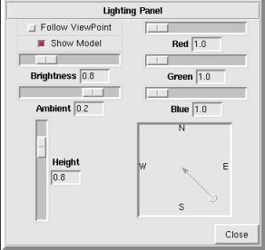

NVIZ Reference Manual
CONTENTS
Lighting Panel
The Lighting panel has options to control the position,
color, and brightness of the lights. NVIZ uses a fill light
and a main light.
The fill light is a permanent dim white light directly over the surface.
The main light controls the shading, which you adjust using the
Lighting panel. As you adjust the lighting, a lighting
model (sphere) appears on the surface and continually shows the effects
of the lighting changes.
-

OPTIONS
- Follow Viewpoint
- Moves the light position with the view position (if selected).
By default (off), the light remains fixed at the position set from the
Lighting panel.
- Show Model
- Draws the lighting model (sphere) in the viewer. The lighting model
shows changes made to lighting parameters.
- Brightness
- Adjusts the brightness of the main light.
- Ambient
- Adjusts the ambient light associated with the main light and the
brightness of the fill light.
- Height
- Adjusts the main light height.
- Red
- Adjusts the amount of Red in the main light.
- Green
- Adjusts the amount of Green in the main light.
- Blue
- Adjusts the amount of Blue in the main light.
- Position Box
- Adjusts the main light direction.
Click and drag the puck to change the light direction.
The box annotations are North,
South, East, and
West.
- Close
- Closes the Lighting panel.